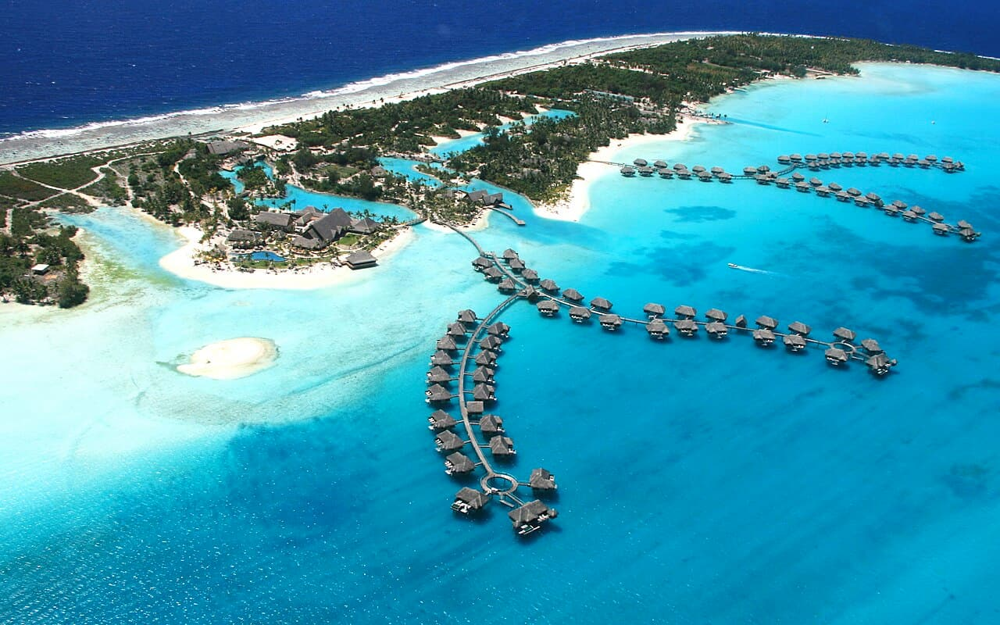

Bora Bora
Polynésie française · snorkeling, plongée, paddle, kayak, baignade

Un lagon fermé par une couronne de motus, autour d’un piton volcanique. Eau tiède et peu profonde, raies pastenagues et raies aigles dans les passes.
- Lieu
- Polynésie française
- Niveau
- Débutant
- Activités
- snorkeling, plongée, paddle, kayak, baignade
- Type d'eau
- Mer / océan
- Coordonnées
- -16.54, -151.74 (position approximative du secteur)
Dangers à connaître
- Trafic de navettes et d’excursions dans le lagon.
- Courant sortant dans la passe de Teavanui.
- Nourrissage des raies déconseillé : il modifie leur comportement.
Le conseil d'Ocean Buddy
Fais le tour du lagon en pagaie tôt le matin, avant que les bateaux ne le réveillent.
Ouvrir dans Ocean Buddy Télécharger sur l'App Store
Source : Description historique Ocean Buddy · vérification externe en attente.